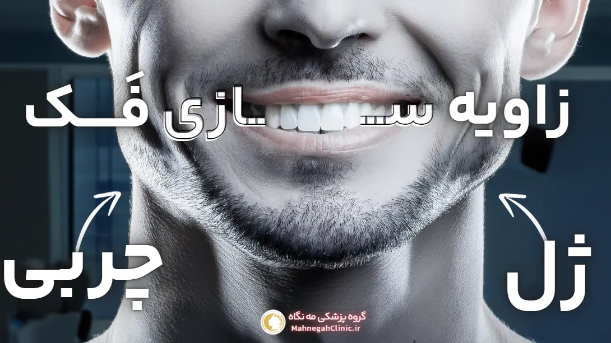
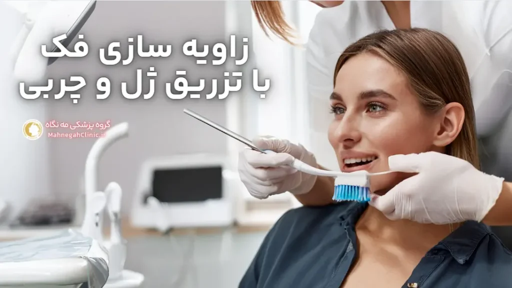
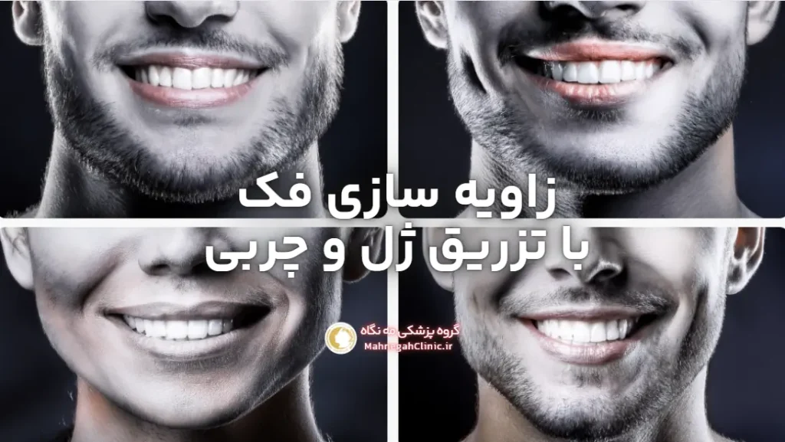

خانه / مجله / زاویه سازی فک
زاویه سازی فک با ژل یا چربی؟ واقعا کدام یک بهتر است؟

زاویه سازی فک با ژل بهتر است یا چربی؟ زاویه سازی فک یکی از محبوبترین روشهای زیبایی برای بهبود ظاهر چهره و افزایش اعتماد به نفس است.
دو روش اصلی برای زاویه سازی فک وجود دارد: تزریق ژل و تزریق چربی. هر کدام از این روشها مزایا و معایب خاص خود را دارند و انتخاب بهترین گزینه به نیازها، ترجیحات و شرایط هر فرد بستگی دارد.
در این مقاله، به بررسی دقیق هر دو روش و مقایسه آنها میپردازیم تا به شما در تصمیمگیری آگاهانه کمک کنیم.
1 - زاویه سازی فک با ژل و چربی: مروری بر هر دو روش
زاویه سازی فک با ژل چیست؟
در این روش، پزشک متخصص با استفاده از سوزنهای ظریف، فیلرهای پوستی حاوی اسید هیالورونیک یا سایر مواد پرکننده را در نقاط استراتژیک فک تزریق میکند. این فیلرها باعث افزایش حجم و تعریف خط فک میشوند و به صورت ظاهری جوانتر و متناسبتر میبخشند. این روش غیرجراحی و کمتهاجمی است و نتایج آن بلافاصله قابل مشاهده است.
زاویه سازی فک با چربی چیست؟
در این روش، چربی از نواحی دیگر بدن مانند شکم یا رانها برداشته شده و پس از پردازش، به فک تزریق میشود. این روش به عنوان "انتقال چربی" یا "پیوند چربی" نیز شناخته میشود. از آنجا که از بافت طبیعی بدن خود فرد استفاده میشود، احتمال واکنشهای آلرژیک یا پس زدن بسیار کم است. با این حال، این روش نیاز به جراحی و دوره نقاهت دارد.
2 - مزایای زاویه سازی فک با ژل
تزریق ژل یا فیلر یکی از روشهای محبوب و پرطرفدار برای زاویه سازی فک است که به دلیل مزایای متعدد آن، مورد توجه بسیاری از افراد قرار گرفته است. در ادامه به بررسی برخی از مهمترین مزایای این روش میپردازیم:
نتایج فوری و قابل پیشبینی
- مشاهده فوری تغییرات: یکی از بزرگترین مزایای تزریق ژل برای زاویه سازی فک، مشاهده فوری نتایج پس از درمان است. شما میتوانید بلافاصله پس از تزریق، تغییرات ایجاد شده در خط فک خود را مشاهده کنید و از چهره جدید خود لذت ببرید.
- قابل پیشبینی بودن نتایج: پزشک متخصص با کنترل دقیق میزان و محل تزریق فیلر، میتواند نتایج قابل پیشبینی و مطابق با انتظارات شما ایجاد کند. این امر به شما اطمینان میدهد که به ظاهر دلخواه خود دست خواهید یافت.
عدم نیاز به جراحی و دوره نقاهت طولانی
- روش غیرجراحی و کمتهاجمی: تزریق ژل یک روش غیرجراحی است که نیازی به بیهوشی، برش یا بخیه ندارد. این امر باعث میشود تا خطر عوارض جانبی و عفونت به حداقل برسد.
- دوره نقاهت کوتاه: پس از تزریق ژل، شما میتوانید بلافاصله به فعالیتهای روزمره خود بازگردید و نیازی به استراحت طولانی مدت ندارید. ممکن است کمی تورم یا کبودی در محل تزریق ایجاد شود، اما این عوارض معمولاً خفیف و موقتی هستند.
- انعطافپذیری: تزریق ژل یک روش انعطافپذیر است و میتوان آن را به راحتی با سایر روشهای زیبایی مانند تزریق بوتاکس یا لیفت صورت ترکیب کرد.
سایر مزایای زاویه سازی فک با ژل:
- ایمنی بالا: فیلرهای پوستی مورد استفاده در این روش معمولاً از مواد طبیعی و سازگار با بدن ساخته میشوند و خطر واکنشهای آلرژیک یا پس زدن بسیار کم است.
- قابل تنظیم: میزان فیلر تزریق شده میتواند بر اساس نیازها و ترجیحات شما تنظیم شود تا به نتایج طبیعی و دلخواه دست یابید.
- هزینه مناسب: در مقایسه با جراحی زاویه فک، تزریق ژل هزینه کمتری دارد و برای بسیاری از افراد مقرون به صرفهتر است.
با توجه به این مزایا، تزریق ژل یک گزینه جذاب برای افرادی است که به دنبال روشی سریع، ایمن و موثر برای زاویه سازی فک خود هستند. همچنین در این مطلب از آکسفورد توضیحات جامعی به زبان انگلیسی در این خصوص آورده شده است.

3 - مزایای زاویه سازی فک با چربی
زاویه سازی فک با چربی، که به عنوان انتقال چربی یا پیوند چربی نیز شناخته میشود، یک روش طبیعی و موثر برای بهبود خط فک و ایجاد ظاهری جوانتر و متناسبتر است. در این روش، از چربی بدن خود فرد برای افزایش حجم و برجستهسازی فک استفاده میشود که مزایای منحصر به فردی را به همراه دارد.
استفاده از بافت طبیعی بدن
- سازگاری بالا: از آنجا که چربی از بدن خود فرد گرفته میشود، احتمال واکنشهای آلرژیک یا پس زدن بسیار کم است و بدن آن را به عنوان یک بافت بیگانه شناسایی نمیکند.
- ظاهر طبیعی: چربی تزریق شده به فک، با بافتهای اطراف ادغام میشود و نتایج طبیعی و هماهنگ با سایر اجزای صورت ایجاد میکند.
- کاهش چربی در نواحی دیگر: انتقال چربی به فک، علاوه بر بهبود ظاهر فک، میتواند به کاهش چربی در نواحی دیگر بدن مانند شکم یا رانها نیز کمک کند و به طور همزمان دو هدف زیبایی را محقق سازد.
ماندگاری طولانیتر نتایج
- ماندگاری بالا: در مقایسه با تزریق ژل، نتایج زاویه سازی فک با چربی معمولاً ماندگاری بیشتری دارند، زیرا بخشی از چربی تزریق شده به طور دائمی در فک باقی میماند و با بدن ادغام میشود.
- کاهش نیاز به تزریق مجدد: با توجه به ماندگاری بالای نتایج، نیاز به تزریق مجدد چربی در فواصل زمانی کوتاهتر کاهش مییابد و در درازمدت میتواند مقرون به صرفهتر باشد.
- جوانسازی پوست: چربی تزریق شده حاوی سلولهای بنیادی است که میتوانند به جوانسازی پوست و بهبود کیفیت آن در ناحیه فک کمک کنند.
سایر مزایای زاویه سازی فک با چربی:
- بهبود حجم و کانتور صورت: برای دانستن اینکه زاویه سازی فک با ژل یا چربی، انتقال چربی میتواند به بهبود حجم و کانتور سایر نواحی صورت مانند گونهها و شقیقهها نیز کمک کند و ظاهری جوانتر و شادابتر ایجاد کند.
- کاهش چین و چروک: سلولهای بنیادی موجود در چربی تزریق شده میتوانند به تحریک تولید کلاژن و الاستین کمک کنند که منجر به کاهش چین و چروک و بهبود کیفیت پوست میشود.
با توجه به این مزایا، زاویه سازی فک با چربی یک گزینه جذاب برای افرادی است که به دنبال نتایج طبیعی، ماندگار و جوانسازی پوست در کنار بهبود خط فک هستند.
4 - معایب زاویه سازی فک با ژل
اگرچه زاویه سازی فک با ژل مزایای زیادی دارد، اما برای اطلاع از سوال اصلی این مطلب که زاویه سازی فک با ژل یا چربی؟ مانند هر روش زیبایی دیگری، ممکن است با برخی معایب و محدودیتها نیز همراه باشد. آگاهی از این موارد به شما کمک میکند تا تصمیمی آگاهانهتر بگیرید و انتظارات واقعبینانهای از این روش داشته باشید.
نیاز به تزریق مجدد در طول زمان
- ماندگاری موقت: یکی از معایب اصلی تزریق ژل، ماندگاری موقت نتایج آن است. بسته به نوع فیلر و شرایط فرد، نتایج معمولاً بین ۶ تا ۱۸ ماه دوام دارند. پس از این مدت، فیلر به تدریج توسط بدن جذب میشود و برای حفظ نتایج، نیاز به تزریق مجدد خواهید داشت.
- هزینههای تکرار: نیاز به تزریق مجدد فیلر در طول زمان، میتواند هزینههای کلی درمان را افزایش دهد.
احتمال واکنشهای آلرژیک
- حساسیت به مواد فیلر: اگرچه فیلرهای پوستی معمولاً از مواد طبیعی و سازگار با بدن ساخته میشوند، اما در برخی موارد ممکن است باعث واکنشهای آلرژیک شوند. این واکنشها میتوانند شامل قرمزی، تورم، خارش یا حتی عفونت در محل تزریق باشند.
- انتخاب فیلر مناسب: برای کاهش خطر واکنشهای آلرژیک، مهم است که با پزشک خود در مورد سابقه آلرژیهای خود صحبت کنید و فیلری را انتخاب کنید که با پوست شما سازگار باشد.
سایر معایب احتمالی تزریق ژل:
- نیاز به تخصص پزشک: تزریق ژل باید توسط یک پزشک متخصص و مجرب انجام شود تا از نتایج مطلوب و جلوگیری از عوارض جانبی اطمینان حاصل شود.
- احتمال عدم تقارن: اگر تزریق فیلر به درستی انجام نشود، ممکن است باعث عدم تقارن در فک شود.
- احتمال ایجاد توده یا برآمدگی: در موارد نادر، ممکن است فیلر به طور ناهموار توزیع شود و باعث ایجاد توده یا برآمدگی در فک شود.
با وجود این معایب، تزریق ژل همچنان یک روش محبوب و موثر برای زاویه سازی فک است، به خصوص برای افرادی که به دنبال نتایج سریع و غیرجراحی هستند. با انتخاب یک پزشک متخصص و مجرب و رعایت مراقبتهای پس از تزریق، میتوانید از مزایای این روش بهرهمند شوید و خطرات آن را به حداقل برسانید.
5 - معایب زاویه سازی فک با چربی
در کنار مزایای قابل توجه، «زاویه سازی فک» با چربی نیز با برخی معایب و محدودیتها همراه است که باید قبل از تصمیمگیری در مورد این روش، آنها را در نظر بگیرید.
نیاز به جراحی و برداشت چربی
- روش تهاجمی: برخلاف تزریق ژل، زاویه سازی فک با چربی نیاز به یک جراحی کوچک برای برداشت چربی از نواحی دیگر بدن مانند شکم یا رانها دارد. این جراحی معمولاً تحت بیحسی موضعی یا بیهوشی عمومی انجام میشود و ممکن است با عوارض جانبی مانند درد، تورم، کبودی و عفونت همراه باشد.
- دوره نقاهت طولانیتر: پس از جراحی، نیاز به یک دوره نقاهت برای بهبودی کامل دارید. این دوره ممکن است چند هفته طول بکشد و در این مدت باید از فعالیتهای سنگین و ورزش خودداری کنید.
- در این ویدیو به صورت کامل میتوانید مشاهده کنید.
احتمال جذب بخشی از چربی تزریق شده
- جذب چربی: پس از تزریق چربی به فک، بخشی از آن ممکن است توسط بدن جذب شود. این امر میتواند باعث کاهش حجم و برجستگی فک شود و نیاز به تزریق مجدد چربی در آینده را ایجاد کند.
- پیشبینی میزان جذب: پیشبینی دقیق میزان چربی که توسط بدن جذب میشود، دشوار است و ممکن است نتایج نهایی کاملاً مطابق با انتظارات شما نباشند.
سایر معایب احتمالی زاویه سازی فک با چربی:
- نیاز به تخصص پزشک: این روش نیاز به یک جراح پلاستیک صورت مجرب و ماهر دارد تا از نتایج مطلوب و جلوگیری از عوارض جانبی اطمینان حاصل شود.
- هزینه بالاتر: در مقایسه با تزریق ژل، زاویه سازی فک با چربی معمولاً هزینه بیشتری دارد، زیرا نیاز به جراحی و برداشت چربی دارد.
- احتمال عدم تقارن: اگر تزریق چربی به درستی انجام نشود، ممکن است باعث عدم تقارن در فک شود.
با وجود این معایب، تفاوت بین زاویه سازی فک با ژل یا چربی انجام این کار با تزریق چربی همچنان یک روش موثر و طبیعی برای بهبود خط فک است، به خصوص برای افرادی که به دنبال نتایج ماندگار و جوانسازی پوست هستند. با انتخاب یک جراح متخصص و مجرب و رعایت مراقبتهای پس از جراحی، میتوانید از مزایای این روش بهرهمند شوید و خطرات آن را به حداقل برسانید.

6 - عوامل موثر در انتخاب بین ژل و چربی برای زاویه سازی فک
انتخاب بین زاویه سازی فک با ژل یا چربی، یک تصمیم شخصی است که به عوامل مختلفی بستگی دارد. در این بخش، به بررسی برخی از مهمترین عواملی که باید در نظر بگیرید، میپردازیم تا به شما در انتخاب بهترین گزینه کمک کنیم.
آناتومی صورت و میزان اصلاح مورد نیاز
- میزان اصلاح: اگر به دنبال تغییرات جزئی و ظریف در خط فک خود هستید، تزریق ژل ممکن است گزینه مناسبی باشد. اما اگر نیاز به اصلاحات اساسیتر و افزایش حجم قابل توجهی در فک دارید، انتقال چربی میتواند نتایج بهتری را ارائه دهد.
- ساختار استخوانی: اگر ساختار استخوانی فک شما ضعیف است یا دچار ناهنجاریهایی هستید، ممکن است جراحی استئوتومی فک در کنار انتقال چربی، گزینه بهتری برای شما باشد.
- وجود چربی اضافی در بدن: اگر در نواحی دیگر بدن مانند شکم یا رانها چربی اضافی دارید، انتقال چربی به فک میتواند یک گزینه دو منظوره باشد که همزمان به بهبود خط فک و کاهش چربی در نواحی دیگر کمک میکند.
ترجیحات شخصی و بودجه
- ترجیح برای روش غیرجراحی: اگر تمایلی به جراحی و دوره نقاهت ندارید، تزریق ژل یک گزینه مناسب است.
- ترجیح برای نتایج طبیعی: اگر به دنبال نتایج طبیعی و ماندگار هستید، انتقال چربی میتواند گزینه بهتری باشد، زیرا از بافت طبیعی بدن خودتان استفاده میشود.
- بودجه: تزریق ژل معمولاً هزینه کمتری نسبت به انتقال چربی دارد، اما نیاز به تزریق مجدد در طول زمان دارد که میتواند هزینههای کلی را افزایش دهد.
- زمان بهبودی: اگر زمان بهبودی برای شما مهم است، تزریق ژل گزینه بهتری است، زیرا دوره نقاهت آن بسیار کوتاه است.
سایر عوامل:
- سن: با افزایش سن، تولید کلاژن و الاستین در پوست کاهش مییابد و ممکن است انتقال چربی گزینه بهتری برای جوانسازی پوست در کنار زاویه سازی فک با تزریق چربی یا ژل باشد.
- وضعیت سلامت عمومی: اگر بیماری زمینهای دارید یا داروهایی مصرف میکنید که ممکن است با جراحی تداخل داشته باشند، تزریق ژل ممکن است گزینه ایمنتری باشد.
در نهایت، بهترین راه برای تصمیمگیری در مورد انتخاب بین ژل و چربی برای زاویه سازی فک، مشاوره با یک پزشک متخصص است. پزشک با ارزیابی دقیق شرایط شما و در نظر گرفتن تمامی عوامل فوق، بهترین روش را برای شما پیشنهاد خواهد کرد.
7 - مشاوره با پزشک: گام اساسی در انتخاب بهترین روش
تصمیمگیری در مورد روش مناسب برای زاویه سازی فک با ژل یا چربی، یک انتخاب مهم و شخصی است که میتواند تأثیر زیادی بر ظاهر و اعتماد به نفس شما داشته باشد. بنابراین، مشاوره با یک پزشک متخصص و مجرب قبل از هر گونه اقدامی بسیار حیاتی است.
اهمیت مشاوره با پزشک متخصص
- ارزیابی تخصصی: پزشک با بررسی دقیق آناتومی صورت، ساختار استخوانی، میزان چربی، کیفیت پوست و سایر عوامل، میتواند به شما بگوید که آیا زاویه سازی فک با ژل یا چربی برای شما مناسبتر است.
- تعیین اهداف واقعبینانه: پزشک به شما کمک میکند تا انتظارات واقعبینانهای از نتایج هر روش داشته باشید و از ناامیدی و نارضایتی جلوگیری کنید.
- بررسی مزایا و معایب: پزشک مزایا و معایب هر روش را با شما در میان میگذارد و به شما کمک میکند تا با آگاهی کامل تصمیم بگیرید.
- پاسخ به سوالات و نگرانیها: شما میتوانید در جلسه مشاوره، تمام سوالات و نگرانیهای خود را در مورد زاویه سازی فک با پزشک در میان بگذارید و از او راهنمایی بخواهید.
- ارائه یک برنامه درمانی شخصیسازی شده: پزشک بر اساس نیازها، اهداف و شرایط شما، یک برنامه درمانی شخصیسازی شده ارائه میدهد که شامل روش مناسب، میزان فیلر یا چربی مورد نیاز، تعداد جلسات و مراقبتهای پس از درمان است.
ارزیابی شرایط و پیشنهاد بهترین گزینه
- آناتومی صورت: پزشک با بررسی آناتومی صورت شما، میتواند بهترین روش را برای زاویه سازی فک شما پیشنهاد دهد. برای مثال، اگر عدم تقارن فک شما ناشی از ساختار استخوانی است، ممکن است جراحی استئوتومی فک در کنار انتقال چربی، گزینه بهتری برای شما باشد.
- اهداف زیبایی: پزشک با در نظر گرفتن اهداف زیبایی شما، روشی را پیشنهاد میدهد که به بهترین نحو به این اهداف دست یابید. برای مثال، اگر به دنبال نتایج طبیعی و ماندگار هستید، انتقال چربی میتواند گزینه بهتری باشد.
- بودجه: هزینههای روشهای مختلف زاویه سازی فک متفاوت است. پزشک با توجه به بودجه شما، گزینههای مناسبی را پیشنهاد میدهد.
- ترجیحات شخصی: برخی افراد روشهای غیرجراحی را ترجیح میدهند، در حالی که برخی دیگر به دنبال نتایج دائمیتر هستند و جراحی را انتخاب میکنند. پزشک با در نظر گرفتن ترجیحات شما، بهترین روش را پیشنهاد خواهد کرد.
- وضعیت سلامت عمومی: پزشک سابقه پزشکی شما را بررسی میکند و در صورت وجود بیماریهای زمینهای یا مصرف داروهای خاص، بهترین روش را با توجه به شرایط شما پیشنهاد میدهد.
در گروه پزشکی مه نگاه، ما به اهمیت مشاوره و ارتباط موثر با بیماران اعتقاد داریم. پزشکان ما با صبر و حوصله به تمام سوالات شما پاسخ میدهند و شما را در انتخاب بهترین روش برای زاویه سازی فک یاری میکنند. برای رزرو نوبت مشاوره رایگان و شروع مسیر خود به سوی زیبایی و اعتماد به نفس بیشتر، همین حالا با ما تماس بگیرید.
8 - سوالات متداول زاویه سازی فک با ژل یا چربی.
تزریق ژل: به طور کلی، تزریق ژل درد کمتری نسبت به انتقال چربی دارد. در این روش، معمولاً از بیحسی موضعی استفاده میشود و درد حین تزریق بسیار خفیف است.
انتقال چربی: انتقال چربی نیاز به جراحی و برداشت چربی از نواحی دیگر بدن دارد که ممکن است با درد و ناراحتی بیشتری همراه باشد، حتی با وجود استفاده از بیحسی.
هر دو روش میتوانند نتایج طبیعی ایجاد کنند، اما انتقال چربی به دلیل استفاده از بافت طبیعی بدن، ممکن است نتایج طبیعیتر و هماهنگتری با سایر اجزای صورت ایجاد کند.
مهارت پزشک: مهمترین عامل در دستیابی به نتایج طبیعی، مهارت و تجربه پزشک است. یک پزشک متخصص و مجرب میتواند با هر دو روش، نتایج زیبایی و طبیعی ایجاد کند.
انتقال چربی معمولاً ماندگاری بیشتری نسبت به تزریق ژل دارد، زیرا بخشی از چربی تزریق شده به طور دائمی در فک باقی میماند.
انتقال چربی به دلیل نیاز به جراحی و برداشت چربی، معمولاً هزینه بیشتری نسبت به تزریق ژل دارد.
انتقال چربی به دلیل نیاز به جراحی، دوره نقاهت طولانیتری نسبت به تزریق ژل دارد.
بهترین روش برای شما به عوامل مختلفی مانند آناتومی صورت، اهداف زیبایی، بودجه و ترجیحات شخصی شما بستگی دارد. مشاوره با یک پزشک متخصص میتواند به شما در انتخاب بهترین گزینه کمک کند.
در گروه پزشکی مه نگاه، ما با افتخار هر دو روش زاویه سازی فک با ژل و چربی را با بالاترین کیفیت و ایمنی ارائه میدهیم. پزشکان ما با صبر و حوصله به تمام سوالات شما پاسخ میدهند و شما را در انتخاب بهترین روش برای دستیابی به زیبایی و اعتماد به نفس بیشتر یاری میکنند. برای رزرو نوبت مشاوره رایگان و کسب اطلاعات بیشتر، همین حالا با ما تماس بگیرید.